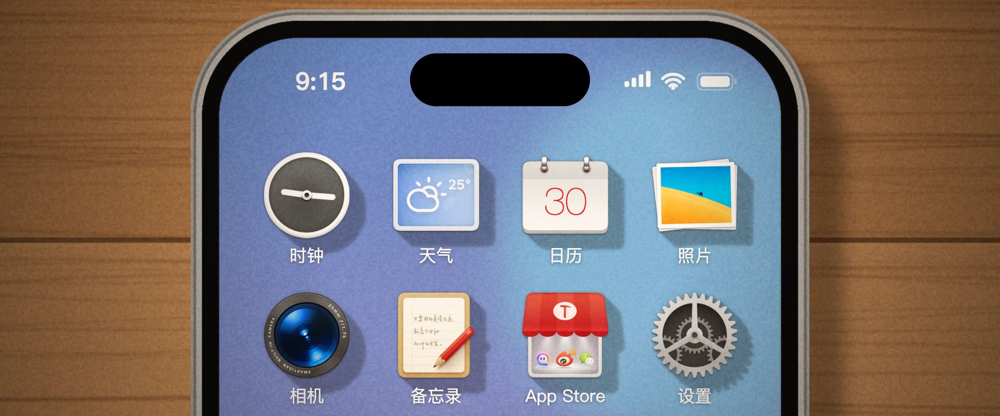
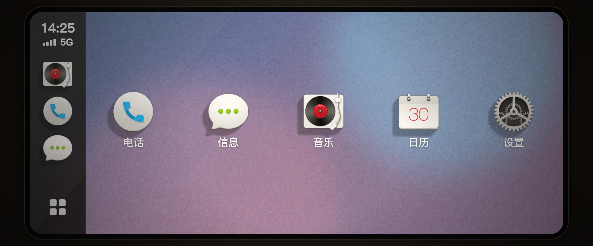
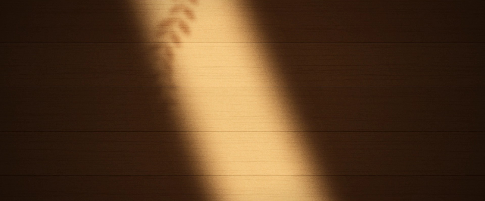

全天动态阴影
影子的方向、长短和深浅会随时间慢慢变，大约每五分钟更新一次。早上的影子拖得很长，边缘发虚；到了中午，几乎缩在图标底下。
理念
我们想让桌面上的图标像摆在木桌上的小物件：窗外有光照进来，它们就有影子。
太阳在动，影子也跟着动。多看几天，扫一眼桌面大概就知道是上午还是下午。
功能

影子的方向、长短和深浅会随时间慢慢变，大约每五分钟更新一次。早上的影子拖得很长，边缘发虚；到了中午，几乎缩在图标底下。

CarPlay 上的图标也有影子，方向和手机主屏一致。上了车，看到的还是同一个时间的光。
一套锤子风格的拟物图标。主题是单独的安装包，卸载引擎不会删掉主题，反过来也一样。
在设置里先看效果，满意了再点应用。应用时桌面只重新载入一次。
兼容性
其他 iOS 版本为测试支持。
获取
上架后，获取方式会放在这里。

致那些把图标当作真实物件来雕琢的人。